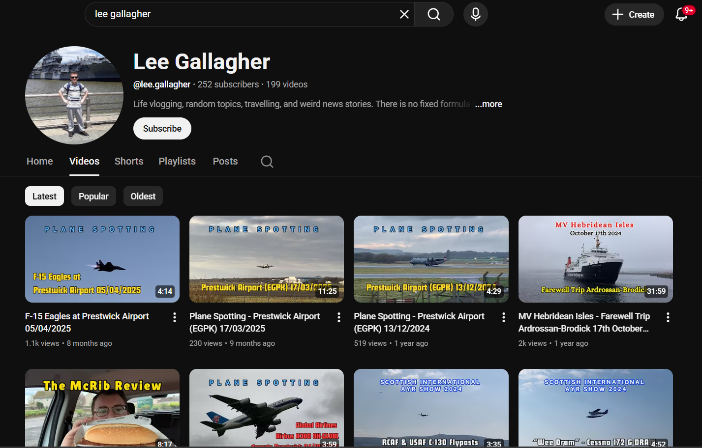
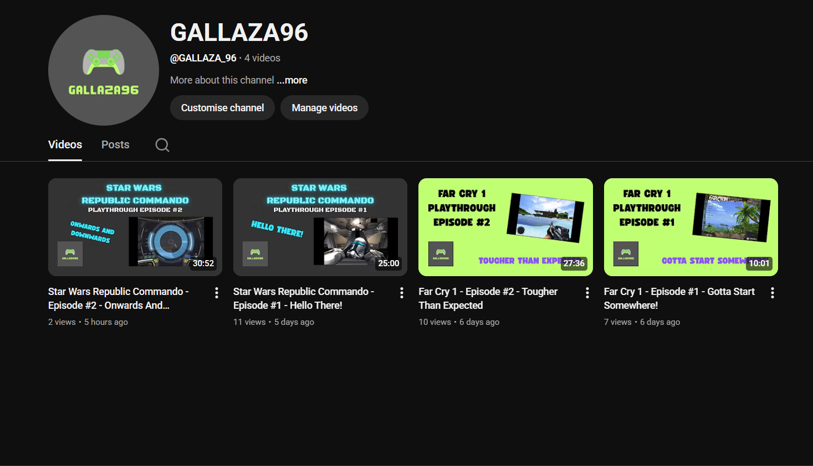

CONTENT CREATION
One of my earliest thoughts when I started playing a lot of video games, and then seeing YouTube videos pop up online of people playing their favourite games, was "how cool would it be if I did that too?".
This wasn't just limited to games either - once I discovered YouTube, I really enjoyed the idea of making real world content (IRL content) as well - perhaps even my own movies!
Now at that time, I didn't really have the resources or the confidence to go after that goal, and as platforms like Twitch and eventually TikTok took over and streaming became a much bigger thing, I didn't pursue it as early as I would have liked.
However, around 2020 I decided to start a YouTube channel. It didn't have any particular theme for the first couple of years, but eventually I found my niche for it of doing plane-spotting videos at my local airport of Prestwick (EGPK). However, I have also began pursuing a gaming channel again and hope to start a tech channel soon as well.
Below are a list of my current endeavours in content creation.
YouTube - Lee Gallagher
This is my first YouTube channel (well, the first where I made a real and significant attempt to make it work). Initially not dedicated to any particular theme, I tried food reviews, gaming videos, travel vlogging, and ferry adventures.
I still consider it a fairly general sandbox channel, and will occasionally post videos on different topics, however there is no doubt that the main theme of that particular channel is now plane-spotting and that is the thing that has allowed the channel to have the success that it has.
I'm very fortunate to live next to what is quite a major area of operations at the moment - Glasgow Prestwick International Airport (PIK/EGPK). This airport plays host to a wide variety of types of aviation. The only major passenger traffic from the airport is flights by Ryanair, however there is a vibrant flight training and private aviation presence at the airport, with even a lot of airlines sending their planes and trainee pilots there to do circuits for base training.
There is also a lot of NATO military air assets that come through this airport, including aircraft from the RAF, the Royal Canadian Air Force and the US Navy. Additionally, cargo operators such as Cargolux fly in and out of the airport with their Boeing 747 fleet about once or twice a week on average.
All of this puts me in the fortunate opportunity to be able to see one of my major interests (aviation) up-close as well as to be able to make plane-spotting videos a regular and somewhat popular hobby.
Link to the channel "Lee Gallagher" here
YouTube - GALLAZA96
My new gaming channel, GALLAZA96 will be my first proper attempt at making a solid YouTube gaming channel. Now that I have a decent gaming laptop (although by no means a high-spec one) and the proliferation of good free screen-recording and video editing software, I feel like I finally have an opportunity to make something that is really good.
My initial goal is simple: making regular, consistent, high-quality gaming videos in a letsplay or commentary format, playing a mix of single-player adventures and multiplayer games, where I might talk about more general topics. Eventually however, I hope to build the brand and my skills & confidence to the point where I can branch out to more modern and relevant platforms such as Twitch and TikTok and getting into live-streamed content.
I'm very excited to start this venture. It is the kind of thing that I regret not starting much sooner when I was younger. I should have spent the money and gotten the capture card and recorded all of that time that I put into playing MW2 and Black Ops 1 on the Xbox 360 - it would have made for good content (or at least happy memories). I think there is a life lesson in there somewhere about being brave enough to take opportunities when you see them.
However, no time like the present...
Link to the channel "GALLAZA96" here